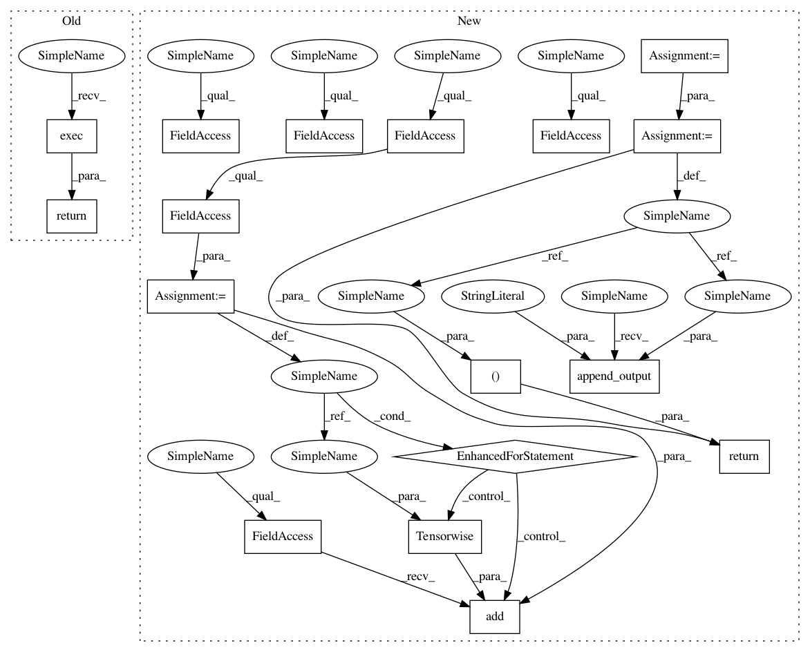

b4910f5fc768b1304099295a8d8d2d8d08474469,src/graph_transpiler/webdnn/graph/operators/reduce.py,Reduce,__call__,#Reduce#Any#,34
Before Change
def __call__(self, x: "variable.Variable"):
self.append_input("x", x)
return self.exec()
def exec(self):
reduced_axis = self.axis
After Change
self.parameters["axis"] = axis
def __call__(self, x: "variable.Variable"):
reduced_axis = self.axis
y_axes = list(x.order.axes)
y_shape = [1 if axis == reduced_axis else x.shape_dict[axis] for axis in y_axes]
y_order = Order(y_axes)
y = variable.Variable(y_shape, y_order)
for axis in x.order.axes:
if axis != reduced_axis:
self.attributes.add(Tensorwise(axis))
self.append_input("x", x)
self.append_output("y", y)
return y,
@property
def axis(self) -> Axis:
return self.parameters["axis"]
In pattern: SUPERPATTERN
Frequency: 3
Non-data size: 17
Instances
Project Name: mil-tokyo/webdnn
Commit Name: b4910f5fc768b1304099295a8d8d2d8d08474469
Time: 2018-01-25
Author: y.kikura@gmail.com
File Name: src/graph_transpiler/webdnn/graph/operators/reduce.py
Class Name: Reduce
Method Name: __call__
Project Name: mil-tokyo/webdnn
Commit Name: b4910f5fc768b1304099295a8d8d2d8d08474469
Time: 2018-01-25
Author: y.kikura@gmail.com
File Name: src/graph_transpiler/webdnn/graph/operators/reinterpret_axis.py
Class Name: ReinterpretAxis
Method Name: __call__
Project Name: mil-tokyo/webdnn
Commit Name: b4910f5fc768b1304099295a8d8d2d8d08474469
Time: 2018-01-25
Author: y.kikura@gmail.com
File Name: src/graph_transpiler/webdnn/graph/operators/unpooling_2d.py
Class Name: Unpooling2D
Method Name: __call__
Project Name: mil-tokyo/webdnn
Commit Name: b4910f5fc768b1304099295a8d8d2d8d08474469
Time: 2018-01-25
Author: y.kikura@gmail.com
File Name: src/graph_transpiler/webdnn/graph/operators/reduce.py
Class Name: Reduce
Method Name: __call__